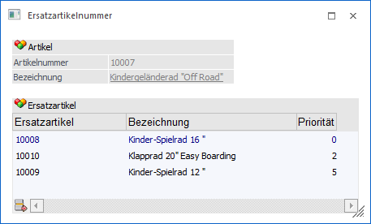
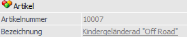
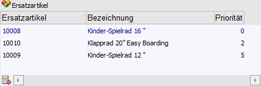
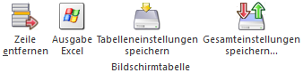
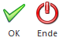

Steht ein Artikel nicht zur Verfügung, so muss ggfs. ein passender Ersatz geliefert werden. Dieser Hauptersatz kann im Feld "Ersatzartikel" des Artikelstamms (WinLine FAKT - Stammdaten - Artikelstamm - Artikel - Register "Lager" - Unterregister "Einstellungen") definiert werden.
Weitere Ersatzartikel können im Fenster "Ersatzartikelnummer" hinterlegt werden, welches durch Anwahl des Buttons geöffnet wird.
Hinweis 1
Für Handelsstücklistenartikel können keine Ersatzartikel eingetragen werden.
Hinweis 2
In der WEBEdition werden Ersatzartikel in der Detailansicht zum eigentlichen Artikel angezeigt, wobei jeder Ersatzartikel dort durch einen Link wiederum aufrufbar ist.
Hinweis 3
In den Programmen "Belege erfassen" und "Kundenbestellungen bearbeiten" kann jederzeit auf einen Ersatzartikel ausgewichen werden, wenn von dem eigentlich bestellten Artikel nicht genügend auf Lager ist.

Artikel

Ø Artikelnummer
An dieser Stelle wird die Artikelnummer des Basisartikels (jener Artikel, für welchen Ersatzartikel definiert werden) angezeigt.
Ø Bezeichnung
Hier wird die Artikelberzeichnung des zuvor aufgeführten Aritkels dargestellt.
Tabelle "Ersatzartikel"

In der Tabelle können weitere Ersatzartikel mit unterschiedlichen Prioritäten hinterlegt werden. In der ersten Zeile (blaue Schrift) wird immer der Artikel angezeigt, welcher als Hauptersatz definiert wurde (hinterlegt im Artikelstamm, Feld "Ersatzzartikel"). Dieser erhalt automatisch die Priorität 0 (höchste Priorität).
Hinweis
Die Sortierung in der Tabelle erfolgt automatisch nach Priorität und Lagerstand.
Tabellenbuttons

Ø Zeile entfernen
Durch Drücken des Buttons können Zeilen aus der Tabelle entfernt werden.
Ø Ausgabe Excel
Durch Anwahl des Buttons "Ausgabe Excel" wird der Inhalt der Tabelle nach Microsoft Excel übergeben.
Ø Tabelleneinstellungen speichern
Die Spalten einer Tabelle können grundsätzlich an beliebige Positionen verschoben, bzw. in der Breite entsprechend angepasst werden. Durch Anwahl des Buttons "Tabelleneinstellungen speichern" werden die Einstellungen benutzerspezifisch gespeichert und bei dem nächsten Aufruf des Programmpunktes wieder vorgeschlagen.
Ø Gesamteinstellungen speichern
Im Gegensatz zu "Tabelleneinstellungen speichern" können mit "Gesamteinstellungen speichern" mehrere Tabellenaufbauten gespeichert und nach Wunsch geladen werden. Zusätzlich werden Sonderfunktionen der Tabelle (z.B. "Spalte gruppieren") ebenfalls bei der Speicherung bedacht.
Buttons

Ø Ok
Mit dem Ok-Button bzw. der Taste F5 werden die Hinterlegungen gespeichert und das Fenster geschlossen.
Ø Ende
Durch Anwahl des Buttons "Ende" bzw. der Taste ESC wird das Fenster geschlossen und alle nicht gespeicherten Eingaben verworfen.